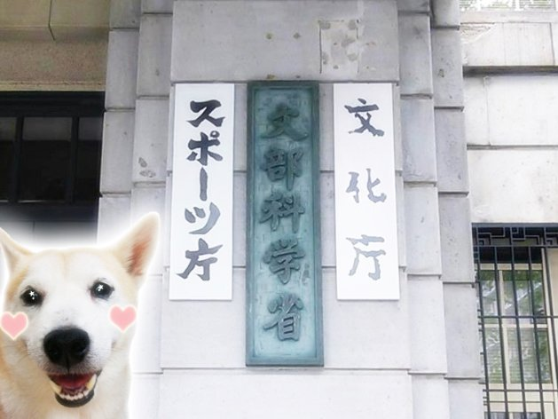
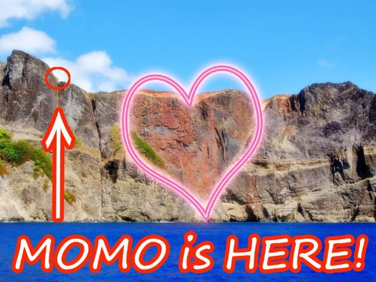
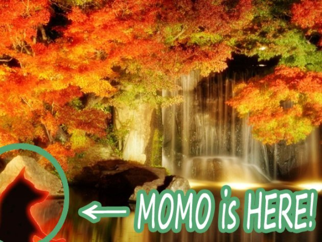
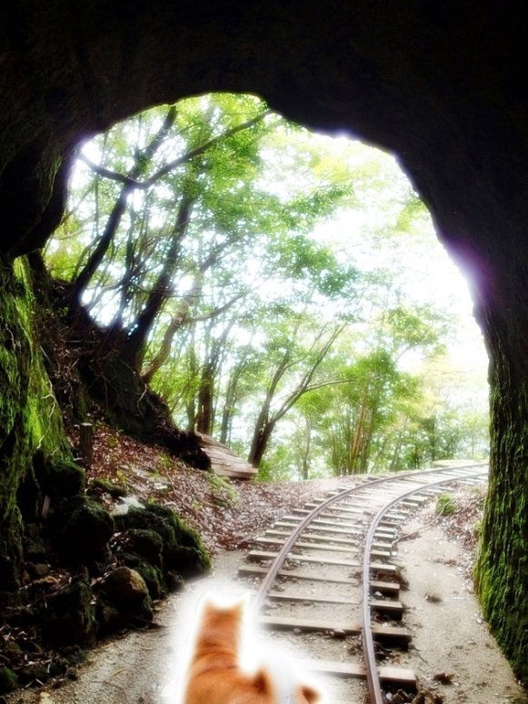

| モモ旅 Vol.1 (The BBB: Breakthrough Bandwagon Books) | |
| モモ | |
| The BBB: Breakthrough Bandwagon Books (2017) | |
Momo 's Journey In Japan Vol.1 ( Jp )
（邦題『モモ旅 Vol.1 』）
Written by Momo
Translated by Tanya
Cover design by Tanya
Maps copyright © 2017 Increment P Corporation
C opyright © 2017 Momo / The BBB : Breakthrough Bandwagon Books
All rights reserved.
ISBN: 978-1-387-12764-1
０. プロローグ
海外の世界遺産を周る２年間の旅を終えて、モモは、ついに、彼女の生まれ故郷である日本に戻って来ました。
東京国際空港（羽田空港）では、ターニャさんと、ターニャさんのお母さんが、やさしく出迎えてくれました。
東京の雰囲気が以前より騒がしくなっているように、モモには感じられました。
2020 年の夏季オリンピック & パラリンピック の開催都市に選ばれたことで、東京を訪れる海外からの観光客は増え続けているようです。
「ねえ、モモ。東京の近辺で、どこか行って見たいところはある？」
それは、もちろん、世界遺産に関する場所です。
日本の官公庁の中心地である霞ヶ関（かすみがせき）のビル群に、ターニャさんはモモを連れて来てくれました。
「ここは、環境省。 日本のどの自然資産を世界遺産として推薦するかが決められているの」
ターニャさんの説明を聴きながら、モモは、その聳（そび） え 立つ建造物を見上げていました。

環境省を訪れた後、ターニャさんとモモは、文化庁 に向かいました。
同じく霞ヶ関にある同庁は、近々、京都に移転する計画があるそうです。
「世界文化遺産室」という事務所が、そのビルの中に ありました。
それについて、ターニャさんが教えてくれました。
「文化庁が定期的に開催している文化審議会で、日本のどの文化資産を世界遺産として推薦するかが決まるのよ」
日本の世界遺産の歴史における聖地を巡礼できて、モモは、とっても興奮しました。
「ターニャさん、このビルと一緒に写真を撮って。超クール ！」
１. 国立西洋美術館
ある日、モモは、東京・上野にある国立西洋美術館に、やって来ました。
聞いたところでは、トルコのイスタンブールで 2016 年 7 月 10 日から開催されている「第 40 回 世界遺産委員会」で、 国立西洋美術館が世界遺産として新たに登録されるようなのです。
トルコ時間で 7 月 15 日の夜か 16 日の朝に、決まるようです。
イスタンブールと東京は 6 時間の時差があるので、モモは眠っている最中でしょう。
そうしてこの美術館に興味を持ったことが、今日の訪問の理由です。
外の灼（や）けるような熱さと比べると、建物の中は涼しくて、快適でした。
「あそこの銅像の人、熱すぎて立ち上がれないみたい」
みんな、熱中症には気をつけて！
トルコのイスタンブールで発生したクーデターの影響で 「第 40 回 世界遺産委員会」 は一時的に休会されてしまいましたが、国立西洋美術館は、世界遺産として新たに登録されました。
モモは、とても嬉しかったので、また上野を訪れ、建物の中を探索しました。
ボランティアのガイドさんのお話によると、ほとんど壁がなく、 屋根を支えているのは、おもに柱で す。
このような構造が空間を広くしていて、その様式は「ピロティ」と呼ばれているそうです。
もしモモが自宅にピロティを導入したら、大きなフトンを広げて日光浴できるかな？
------ 陽射しは、とっても熱そうだけれど......
２. 小笠原諸島
ターニャさんとモモは、東京の 竹芝港で 「おがさわら丸」というフェリーに乗 って、日本の世界遺産のひとつである小笠原諸島へと 、やって来ました。
太平洋上のこれらの島々も東京都に属していますが、東京湾から、なんと、 1,000 キロメートル以上も離れているのです。
到着するまで、フェリーで 24 時間かかりました。
小笠原諸島の中でいちばん大きな父島へ、ついに到着した時、モモは、とても気持ちのいい潮風に包まれました。
ターニャさんも、ごきげんです。
「モモ、いっしょに泳ごう！」
------ よーしっ！自慢 の犬かきを、ターニャさんに見てもらおう！

ターニャさんとモモは、小笠原諸島の無人島、嫁島にやって来ました。
父島から嫁島へは、ボートで１時間くらいです。
モモたちは、美しい海の中で、いっしょに楽しく泳ぎました。
犬かきを披露することに夢中になりながら、モモは海の深い部分へと潜っていきます。
その時、 マグロ さんの大家族がやって来て、モモを取り囲みました。
マグロさんたちは泳ぐのがとても速く、ぐるぐる回っています。
「わあ！洗濯機の中にいるみ たい。とっても楽しい！」
ターニャさんとモモは、また父島に戻って、島内を探索しました。
この島にしか棲息（せいそく）していないという動物や植物にも出会えました。
この大自然の風景は、東京都心のそれとは、まったく異なっています。
モモは、この島で暮らす カタツムリ、 カタマイマイさんとのお話を楽しんでいました。
その時、どこからともなく緑色のトカゲが現れて、カタマイマイさんを睨んで怖がらせ始めました。
そのトカゲはグリーンアノールという名前で、カタツムリさんやセミさんたちをイジメ て いるのだそうです。
モモは勇気を出して、その小さな悪党に言いました。
「ね、ねえ！わ、わ、わたしのお友だちを 、 イジメないで！」
ターニャさんとモモは父島の森を歩いていました。
千尋 岩（ちひろいわ）、またはハート・ロックと言われる有名な断崖を目ざ しているのです。
ジャングルのような密林の中で、コンクリートの廃墟や、人工的な穴や、壊れたジープなどを見つけました。
ターニャさんによると、そうした場違いな品々 は、約 70 年前の戦争の遺物なの だ そうです。
ターニャさんの故郷は、広島の次に原爆が落とされた長崎です。
ふたりは手（モモは肉球） を合わせ、世界平和のために、気持ちを込めて 祈りました。

ターニャさんとモモは、父島で定期船に乗り込みました。
２時間ほどの航海を経て、小笠原諸島で２番目に大きな母島にやって来ました。
密林の中を歩いていると、どこからともなく、可愛らしい歌声が聞こえきます。
歌声に誘われるようにして、ハハジマメグロさんのキュートな姉妹に出会いました。
彼女たちは歓迎の歌を披露し てくれたばかりか 、パパイヤまでくれました。
それは、彼女たちの大好物だそうです。
パパイヤを食べながら、モモは、彼女たちの歌声を楽しみました。
楽しかった夏期休暇も、ついに最後の日になりました。
ターニャさんとモモが本州に帰る日でもあります。
帰りも、来た時と同じ定期船「おがさわら丸」に乗り込みます。
汽笛を鳴らして、定期船は、ゆっくりと海岸を離れます。
澄んだ青空を、気持ちのいい潮風が吹き抜けていきます。
------ 小笠原諸島って、本当に素敵な世界遺産ね！
モモは、島々に前脚を振って、お別れのあいさつをしました。
肉球だけでなく、何度も尻尾も振っていたのでした。
３. 法隆寺と法起寺
モモは 今日 、奈良県の法隆寺を２年ぶりに訪問しています。
京都と同じく、奈良は古代 日本の都で、観光客に、とても人気があります。
お坊さんたちがモモに教えてくれたところによると、法隆寺は 1,500 年も前に、聖徳太子さんと推古天皇さんによって建てられたのだそうです。
このお寺の金堂と五重塔が世界最古 の木造建築であることは、以前、学びました。
台風や地震や火事などがあったのに、何世紀ものあいだ、建ち続けて来たのです。
その荘厳な迫力はモモの言葉を奪い、深く魅了しました。
法隆寺の敷地内を歩いていたモモは、存在感のある八角形の建物を見つけました。
近くを通ったお坊さんのひとりが、モモの関心に気づきました。
「モモちゃん、この建物を 知って るかい ？夢のお堂、という意味の『夢殿（ゆめどの）』 だよ」
そのお坊さんよると、夢殿は、昔の人たちが亡くなった人たちに会うために建てられたそうです。
彼らは、亡くなった人たちが夢の中に出てくると信じていたのです。
モモは、自分の生物学上の両親のことを考えましたが、なにひとつ、おぼえていません。
「この夢殿に入って、お父さんとお母さんに会えたらいいのに な ......」
法隆寺の お坊さんたちはモモに親切で、夢殿の中に祀られている秘密の彫像を特別に見せてくれました。
とても古くなっていましたが、素晴らしい彫像です。
「モモちゃん、これは、救世観 世音菩薩（ぐぜかんぜおんぼさつ）という 神聖な彫像 なん だよ」
それは 178.8 センチメートルで、聖徳太子さ ん と同じ身長だと言われているそうです。
モモは身長 38 センチメールなので、５ぶんの１です。
爪先立ちをして全身を伸ばしましたが、彫像の胸にさえ届きません。
「聖徳太子さんって、背が高かった ん だね！」
モモは奈良の世界遺産のひとつ、法起寺（ほっきじ、または、ほうきじ）に 、 やって来ました。
この寺院は、尼寺として建てられたようです。
敷地内を歩いていると、色とりどりのコスモスが咲き誇っているのを見つけました。
「わあ！とっても素敵なお花畑！」
心地いい薫りの中で、モモは、特にピンクのコスモスが気に入りました。
ピンクは日本語では「モモ」と呼ばれるからです。
奈良県に滞在している時に、モモは法隆寺や法起寺など、いくつかの有名な寺院で火災訓練が行われているのを目にしました。
参加していた人たちによると、 1949 年に法隆寺の金堂の壁画が火災で損失してから、この国では多くの寺院で火災訓練が大々的に行われているそうです。
日本の寺院は、すべて木造ですので、いったん火事になると、すべて燃えてしまいます。
モモは法隆寺の現存する壁画に 感動しましたので、その安全性が心配になって、火災訓練に参加しました。
「火の よ ーじん！火の よ ーじん！」
４. 姫路城
ある日、モモは、兵庫県にある世界遺産、姫路城にやって来ました。
前回ここを訪れたのは、 世界旅行へと旅立つ少し前のことです。
外遊していた２年のあいだに、姫路城の改装工事は終わっていました。
再現された創建当初の姿は、ものすごく白くて、モモはビックリしました。
「わあ！元のお城は、こんなにも白かった ん だ！」
このお城の「白鷺城（しらさぎじょう）」という愛称を、モモは以前から知っています。
ですが最近では、「白すぎ城」とまで呼ばれているそうです。
たしかに、まぶしいほど白くて、モモは変顔になってしまいました。
姫路城は、とても広くて、迷路か何かのようにさえ感じられました。
天守閣前の広場では、多くの人たちが、お城といっしょに写真を撮っています。
「ねえ、モモちゃんも写真に入ろうよ！」
誘われて、モモは何度か写真に入りました。
ふと空を見上げると、何羽かの鳥が飛んでいて、とても気持ち良さそうでした。
モモは鳥たちに肉球を振りました。
「 ねえ、わたしは、ここよ！わたしが見える？」
もし彼女が鳥なら、空から見下ろすお城は、きっと素晴らしいものでしょう。
姫路城は本当に巨大で、終わりがないようにすら感じられました。
お城の中を楽しく走り回っているあいだ、モモは、たくさんの観光客に話しかけられました。
「モモちゃん、それは 、 ハロウィンの仮装かい？どこで見つけたの？可愛いね！」
みんな服装をほめてくれるのですが、モモ自身に は、それは見えません。特に背中に描かれている絵は。
それが、モモには残念でした。
あたりが暗く なって来たので、モモは、おうちに帰ろうと思いました。夜のお化けが 怖いからです。
「いたずら？それとも、お菓子？（ Trick or treat? ）」
この場合、「旅行？それとも、お菓子？（ Trip or treat? ）」でしょうか。
難しい選択だけれど......モモは、旅行より、お菓子のほうが好きなことが多いようです。
姫路城の周りを歩いていると、モモは、 朽ち果てた古い井戸を見つけました。
近くを通った人たちが、怖い話を教えてくれました。
昔、 お菊さんという名前の女中さんが、無実の罪で責められて、殺されて、この井戸に投げ込まれてしまったというのです。
雇い主が大切にしていた貴重なお皿を 、彼女の不注意で無 くして しまった、という疑いだったそうです。
それ以来、女性がお皿を数える 恨みのこもった声が、夜になると、井戸から聞こえてくるのだとか 。
「いちま〜〜〜い......。にま 〜〜〜 い......。さんま 〜〜〜 い......」
あまりの恐ろしさに、モモは、ふるえを止めることができませんでした。
「そんな話を聞いたら、今夜は眠れないじゃない！怖い ん だから！」
姫路城を出発しようとして、モモは、素晴らしい日本庭園を見つけました。
ライトアップされたその形式は、息を呑むほど綺麗でした。
「わあ！なんて素敵な景色！」
この好古園（こうこえん）という庭園は、お城の背景として、つくられたようです。
庭園は世界遺産ではないようですが、ここも 姫路城の一部だとモモは思いました。
まるで不思議の国に迷い込んだかのようです。

５. 白神山地
ある日、モモは、白神山地を２年ぶりに訪れていました。
この場所は、日本で最初に世界遺産に登録された４か所のひとつなの だ そうです。
東北地方の秋田県と青森県にまたがって、巨大な森が広がっています。
この地域はあまりにも巨大なので、前回の訪問時に 迷ってしまったことを、おぼえています。
森の奥深くで、美しい青い池を見つけました。
「わあ！澄み切って、綺麗な池！」
水を飲み、池の中で遊ぶのに夢中になりました。
どこかで地図を落としてしまったらしく、モモは、また迷ってしまいました......
ブナの原生林をどうにか抜けて、モモは白神 岳 の真正面にまで、ついに辿りつきました。
緑の山と空の青のコントラストが、とても鮮やかです。
このあたりは気温が低いので、モモの息は白くなります。
冷たい、湿った空気は東京のそれよりずっと澄んでいて、とても気持ちいいです。
空に浮かぶ雲は綿菓子のようで、モモは不意に、それに触りたくなりました。
後ろ脚で立ち、モモは 何度も何度も 、空へ前脚を伸ばします。
「うーん......。無理かな？」
白神山地を歩きながら、モモは、美しい山や小川に魅了されました。
支流のひとつ、追良瀬川（おいらせがわ）で、モモは澄んだ冷たい水で渇いた喉を潤しました。
突然、川の中から、アユの家族が飛び出して来ました。
アユの女の子が、モモを誘ってくれました。
「モモ、わたしたちと、いっしょに泳がない？」
「わあ、それって楽しそう！」
モモは水に飛び込み、お得意の犬かきを披露しました。
アユの女の子は、どんどんスピードを上げます。
「あの子、なんて速いの！」
ブナの森でお昼寝していたモモは、近くでだれ か が葉をこする音がして、飛び起きました。
あたりを見回すと、ニホンカモシカの男の子が、こちらへ歩いて来ます。
彼女の２倍以上の大きさかもしれません。
「シーッ。今、友だちと隠れん ぼしてて 、隠れる場所を探している ん だ」
なんだ......驚かさないでよ！
モモは安心して、また、うとうと眠り始めました。
陽射しが暖かくて、とても気持ちいいです。
白神山地は昨夜、ひと晩中、雪だったようです。
日の出とともにモモが山小屋で目をさますと、見渡す限りの雪景色でした。
モモは山小屋を飛び出し、興奮して雪景色を駆け回りました。
とても楽しくて、時間を忘れていました。
「くしゅん！」
いつの間にか、からだが冷えています。
「こたつで暖まらないと！」
６ . 屋久島
お正月休暇の時期でしたので、東京国際空港（羽田空港）は、故郷や海外から東京に戻ってくる人たちで、ごった返していました。
モモは東京から鹿児島空港に飛び、そこから小さな飛行機で屋久島を訪れました。
屋久島は、九州の南西にある孤島です。
モモがここを訪れるのは、 2 年ぶりとなります。
「わあ！思ったより暖かい。日差しが気持ちよくて、春みたい！」
モモが屋久島の森を散策していると、にわか雨に遭いました。
巨大な杉の樹の下で雨宿りしていると、ヤクシカのお姉さんに出遭いました。
ヤクシカのお姉さんは、モモに微笑みかけてくれました。
「この場所は一年中、湿度が高いから、わたしたちは綺麗なお肌を保てているのよ」
彼女によると、屋久島の降水量は、東京の 5 倍ほどになるのだそうです。
------ わたしも、お姉さんみたいに綺麗になれるかな？
モモが後について歩いていると、ヤクシカのお姉さんが足を止めました。
「モモちゃん、その杉の切り株に入って、上を見てごらん」
驚いたことに、空がハートの形に見えました。
「うわあ、とっても可愛い！」
お姉さんによると、それは「ウィルソン株」と呼ばれているそうです。
かつてこの杉を調査していた、ウィルソン博士という人に由来するのだとか。
屋久島での、とても忘れられない想い出になりました。

ヤクシカのお姉さんは、モモを、線路のあるところまで連れてきてくれました。
屋久島の森の奥深くを線路が走っているなんて、驚きました。
その景色から、昔、ターニャさんと観た映画のことが思い出されます。
「すごい！『スタンド・バイ・ミー』みたい！」
それは、かつて屋久杉を運ぶのに使われていたトロッコの線路のようです。
線路を歩いていると、『スタンド・バイ・ミー』のテーマ曲が聴こえる気がしました。
久しぶりに、とても良いお天気の日になりました。
モモは、屋久島の海岸を、お散歩しました。
遠くから、船の汽笛が聞こえてきます。
モモが乗る予定の定期船が、宮之浦漁港に近づいているようです。
それは、モモ の屋久島での旅の終わりを意味しました。
------次は、どこの世界遺産に行ってみようかな？
次の冒険のことを考えるだけで、モモは、ワクワクしてしまうのでした。
（モモの次なる冒険に 続く）
７. ギャラリ ー
本書は The BBB: Breakthrough Bandwagon Books のためにつくられたオリジナル作品です 。